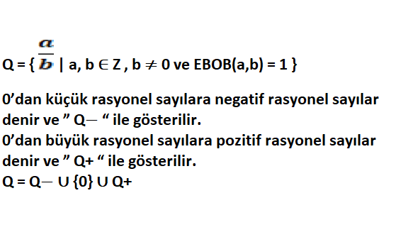

Temel Kavramlar
- Rakam,Sayı
- Doğal Sayılar
- Sayma Sayıları
- Tam Sayılar Kümesi
- Rasyonel Sayılar
- İrrasyonel Sayılar
- Çift Sayılar ve Tek Sayılar
- Pozitif Sayıalr ve Negatif Sayılar
- Ardışık Sayılar
- Asal Sayılar
- Faktöriyel
Rakam, Sayı
Sayıları yazmak için kullanılan sembollere rakam denir. Bir çokluğu belirtmen için bir veya birden fazla rakamla yazılan ifadeye sayı denir. Kullandığımız 10’luk sayı sisteminde rakamlar 0, 1, 2, 3, 4, 5, 6, 7, 8, 9 olmak üzere 10 adettir. 1923, 100, 5 ve 81 birer sayıdır.
Doğal Sayılar
N = { 0, 1, 2, 3, 4, … } kümesine doğal sayılar kümesi denir ve ” N “ harfi ile isimlendirilir.
Sayma Sayıları
Sadece nesneleri saymaya yarayan sayılardır. 1, 2, 3, 4, … diye ilerlerler ve bitmezler. Bir sonu yoktur sonsuzlardır.
Tam Sayılar Kümesi
Z = { …, −3, −2, −1, 0, 1, 2, 3, … } kümesine tam sayılar kümesi denir ve ” Z “ harfi ile isimlendirilir. 0’dan küçük tam sayılara negatif tam sayılar denir ve ” Z− “ ile gösterilir. Z− = { −1, −2, −3, … } 0’dan büyük tam sayılara pozitif tam sayılar denir ve ” Z+ “ ile gösterilir. Z+ = { 1, 2, 3, …} Z = Z− ∪ {0} ∪ Z+
Rasyonel Sayılar
a ve b aralarında asal tam sayılar ve b sıfırdan farklı olmak üzere  şeklinde yazılabilen sayıların kümesine rasyonel sayılar kümesi denir ve ” Q “ harfi ile isimlendirilir
şeklinde yazılabilen sayıların kümesine rasyonel sayılar kümesi denir ve ” Q “ harfi ile isimlendirilir

İrrasyonel Sayılar
a ve b aralarında asal tam sayılar ve b sıfırdan farklı olmak üzere a/b şeklinde yazılamayan sayıların kümesine irrasyonel sayılar kümesi denir ve ” Q’ “ harfi ile isimlendirilir.Kök dışına tam olarak çıkamayan sayılar irrasyonel sayıdır. Ondalık açılımı sınırsız ve devirsiz olan sayılar irrasyonel sayıdır.
Çift Sayılar ve Tek Sayılar
Çift Tam Sayı: Birler basamağında 0, 2, 4, 6, 8 rakamlarından herhangi biri olan sayılara çift tam sayı denir. “n” tam sayı olmak üzere çift tam sayıları “2n” ile gösterebiliriz. Çift tam sayılar kümesi {………,-4,-2, 0, 2, 4,……….., 2n, …….. } şeklinde gösterilir.
Tek Tam Sayı: Birler basamağında 1, 3, 5, 7 rakamlarından herhangi biri olan sayılara tek tam sayı denir. “n” tam sayı olmak üzere tek tam sayılar “2n-1” ile gösterebiliriz. Tek tam sayılar kümesi {…………,-5, -3, -1, 1, 3, 5, …….., 2n-1, …….. } şeklinde gösterilir.
Tek ve Çift Sayılarda İşlemler
T= Tek Sayı Ç=Çift Sayı olmak üzere
Pozitif Sayılar ve Negatif Sayılar
a>0 ise a sayısına pozitif sayı, a<0 ise a sayısına negatif sayı denir.
Ardışık Sayılar
Belirli bir kurala göre art arda gelen sayılara ardışık sayılar denir.
Aralarında bir fark olan ve art arda gelen tam sayılara ardışık tam sayılar denir. n tam sayı olmak üzere n, n+1, n+2, n+3, … şeklinde gösterilir.
– n bir tek tam sayı ise …., n-2,n,n+2,…. sayılarına ardışık tek sayılar denir ve ardışık tek sayılar arasındaki fark 2 dir.
– n bir çift tam sayı ise …., n-2, n , n+2 ,… sayılarına ardışık çift sayılar denir ve ardışık çift sayılar arasındaki fark 2 dir.
Bir ardışık sayı dizisinde terimlerin toplamı ve terim sayısı biliniyor ise ortanca terim

Asal Sayılar
1 ve kendisinden başka pozitif böleni olmayan 1 den büyük doğal sayılara asal sayı denir. Asal sayılar; 2, 3, 5, 7, 11, 13, 17, 19, 23, 29, 31, 37, 41, … şeklinde sıralanır.
– En küçük asal sayı 2 dir.
– 1 asal sayı değildir.
– Negatif sayılar asal sayı değildir.
– 2 dışında çift olup aynı zamanda asal olan başka bir sayı yoktur.
Aralarında Asal Sayılar
1 den başka pozitif ortak böleni olmayan iki veya daha fazla sayıya aralarında asal sayı denir.
Ardışık sayılar daima aralarında asaldır.
1 bütün pozitif tam sayılarla aralarında asaldır.
Faktöriyel
1 den n doğal sayısına kadar olan doğal sayıların çarpımına faktöriyel denir ve n! İle gösterilir.
! = n.(n-1).(n-2)…3.2.1
0! = 1
1! = 1
2! = 2.1
3!=3.2.1
10!=10.9.8.7!
15!= 15.14.13!
!=n.(n-1).(n-2)!
Tıkla Konu
- Temel Kavramlar
- Sayı Basamakları
- Bölme ve Bölünebilme
- EBOB – EKOK
- Rasyonel Sayılar
- Basit Eşitsizlikler
- Mutlak Değer
- Üslü Sayılar
- Köklü Sayılar
- Çarpanlara Ayırma
- Oran Orantı
- Denklem Çözme
- Problemler
- Kümeler
- Kartezyen Çarpım
- Mantık
- Fonskiyonlar
- Polinomlar
- 2.Dereceden Denklemler
- Permütasyon
- Kombinasyon
- Olasılık
- İstatistik
Copyright © 2021 Designed by Who'ScaRe